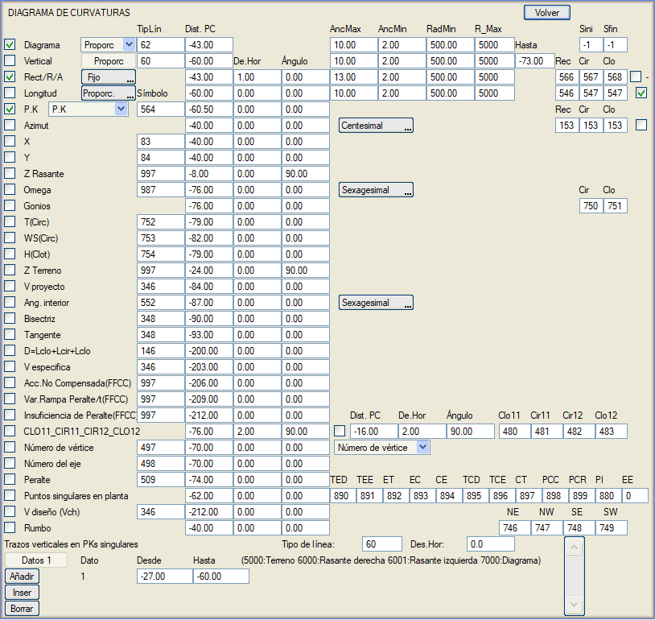
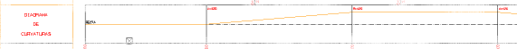
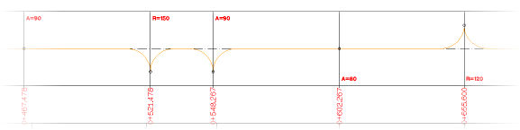
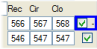
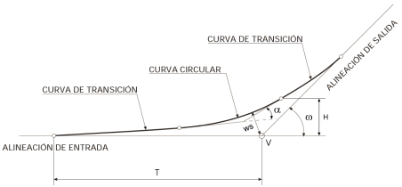
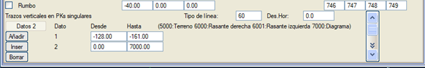

Buradan, boykesitin yatay kurp diyagramını detaylı bir şekilde ve çeşitli seçeneklerle göstermek mümkündür.

Diyagram kutucuğu işaretlendiğinde, yatay kurp diyagramı belirtilen çizgi tipiyle ve karşılaştırma düzlemine olan mesafede çizilir. Üç gösterim seçeneği sunulur:
- Sabit: Çizilen diyagram, BOYKESİT düzenlemesinde veya DEVERLER menüsünde görüntülenebilene benzerdir, yani diyagram için bir genişlik (MaksGen) belirlenir ve aliymanlar (düz kesimler) merkezi bölgeye (karşılaştırma düzlemine göre tanımlanan mesafede), sağa ve sola kurplu kesimler sırasıyla üst ve alt kısma (MaksGen mesafesinde) ve geçiş eğrileri (klotoidler) eğik çizgiler olarak yerleştirilir.

- Orantılı: Bu durumda, kurplu kesimler her zaman MaksGen mesafesinde gösterilmez, bunun yerine yarıçapa orantılı olarak gösterilir. Öyle ki, MinYçap'a eşit veya daha küçük yarıçaplar MinGen mesafesine, Maks_Y'ye eşit veya daha büyük olanlar MaksGen mesafesine çizilir ve ara yarıçaplar, MinGen ve MaksGen arasında, yarıçapa orantılı bir ara mesafeye yerleştirilir.
- Kurplar: Dairesel kurplar ve klotoidler, boykesit bilgi bandında (gitar) tüm uzunluklarını ve MaksGen genişliğini kaplayan yaylar olarak temsil edilir. Bu modda, her durumda Aliyman, Klotoid ve Yarıçap kelimelerini ve ayrıca uzunluğu etiketlemek için yeterli alan olması amacıyla maksimum genişliğin sıfır olarak ayarlanması önerilir. Polonya'da kullanılan POL_001.gui bilgi bandı, bu tür bir diyagramı kullanır.
Sbaş ve Sson alanları, diyagramın ekseni üzerinde her güzergah elemanının sırasıyla başlangıcına ve sonuna herhangi bir sembol çizme imkanı sunar.
Tasarlayabileceğimiz kurp diyagramı türü içinde Kurplar, Kurplar2, Kurplar3, Kurplar4 veya Kurplar5 seçeneğini, ilgimizi çeken kurp çizim stiline bağlı olarak seçebiliriz.

Dikey kutucuğu işaretlendiğinde, yatay güzergahın karakteristik noktalarına göre, ÇizTipi'nde belirtilen çizgi tipiyle ve karşılaştırma düzlemine olan mesafe (orantılı diyagrama benzer şekilde MaksGen, MinGen, MinYçap ve Maks_Y'de belirtilen değerlerden etkilenir) ile Buraya kadar'da belirtilen değer arasında bir uzunlukta dikey kesimler çizilir.
Aliyman, dairesel kurp ve klotoid değerleri, Aliy/R/A kutucuğu işaretlendiğinde, sırasıyla Aliy, Dair ve Klo'da belirtilen sembollerle etiketlenir. Bu semboller iki şekilde yerleştirilebilir. Eğer Sabit seçilirse, MaksGen tarafından verilen mesafeye yerleştirilirler. Eğer Orantılı seçilirse, MinGen (MinYçap'a eşit veya daha küçük yarıçaplar için) ve MaksGen (Maks_Y'ye eşit veya daha büyük yarıçaplar için) arasında ve yarıçapa orantılı bir mesafeye yerleştirilirler. Dolayısıyla bu son durum, orantılı diyagrama benzer şekilde çalışır. Bu semboller ayrıca, Yt.Öte'de belirtilen ve karakteristik noktaya göreceli olan yatay ötelemeye sahip olacak ve belirtilen açı kadar döndürülmüş olacaktır.
Bir aliyman, kurp veya klotoidin merkezinde etiketlenen veriler, eğer bu eleman birkaç paftayı aşıyorsa, her paftada kapladığı kesimin merkezinde etiketlenir.
Sola kurplar için yarıçap değeri negatif işaretle gösterilebilir.
Ayrıca, Uzunluk kutucuğu işaretlendiğinde her bir güzergah elemanının veya geçiş eğrisinin uzunluğunu etiketlemek de mümkündür. Bu etiketleme için seçenekler bir önceki paragrafta açıklananlarla aynıdır.
İlgili kutucuklar işaretlenirse, belirtilen etiket ve karşılaştırma düzlemine olan mesafe ile (ayrıca bir yatay öteleme ve bir açı da belirtilebilir) aşağıdaki veriler etiketlenir:
- Yatay güzergahın karakteristik noktalarının kilometresi (KM), Onluklar (KM) kutucuğu işaretlenirse KM'nin onlukları, Kazık No veya Kullanıcı KM'leri.
- Yatay güzergahın karakteristik noktalarındaki azimut (Azimut), grad veya derece cinsinden.
- Yatay güzergahın karakteristik noktalarının X ve Y koordinatları (X/Y).
- Yatay güzergahın karakteristik noktalarındaki kırmızı kot (Z Kırmızı Kot).
- Kurpların sapma açısı (Omega - ω): Aliymanlar arasındaki sapma açısı. Dairesel güzergah elemanlarının merkezi bölgesinde etiketlenir. Şekilde ω olarak gösterilmiştir. Derece veya grad olarak seçilebilir. Kütüphanede, grad cinsinden omega gösterimi için varsayılan olarak kullanılan S1078 sembolü mevcuttur.
- Kurplu güzergah elemanlarındaki merkez açı (Açılar): Dairesel kurplar (Dair) ve klotoidler (Klo) için bir sembol tipi belirtmek gerekecektir. Şekilde α olarak gösterilmiştir.
- Tanjant boyu (T(Dair)): Some noktası ile teğet noktası (klotoidin başlangıcı) arasındaki mesafe. Şekilde T olarak gösterilmiştir.
- Some noktası ile dairesel kurp arasındaki dış mesafe (WS(Dair)). Şekilde ws olarak gösterilmiştir.
- Klotoid-dairesel kurp teğet noktası ile klotoidin başlangıç noktasından geçen teğet arasındaki mesafe (H(Klot)). Şekilde H olarak gösterilmiştir.
- Yatay güzergahın karakteristik noktalarındaki arazi kotu (Z Arazi).
- Proje hızı.
- Tanjant.
- Bisektris.
- İç açı.
- Kurbun toplam uzunluğu (giriş ve çıkış klotoidlerinin uzunlukları artı dairesel kurp uzunluğunun toplamı).
- Kurbun özgül hızı.
- Dengelenmemiş ivme (demiryolu projeleri için).
- Zamana göre dever rampası değişimi (yine demiryolu projeleri için).
- Dever eksikliği (demiryolu projeleri için).
- Some numarası (Some numarası, Kurp numarası, 100xGüzergah+Kurp) ve Güzergah numarası (örn., V33-12, 12 numaralı güzergahın 33. somesini belirtir).
- Dever.
- Yatay güzergahtaki karakteristik noktalar: S şeklindeki iki klotoidin sonsuzdaki noktasını bir EE sembolü ile etiketleme imkanı. Sembolün değeri 0 veya negatif ise, o zaman iki sembolle (ET,TED) veya (ET,TEE) etiketlenmeye devam edilir.
- Kurbun tasarım hızı (Vch).
- Rulman: Düz hatların rulmanını derece cinsinden, NE,NW,SE,SW açıları için dört farklı sembol kullanarak etiketleme imkanı.

Son olarak, kullanıcıya yatay güzergahın karakteristik kilometrelerinde dikey çizgiler grupları çizme imkanı sunulur. Çizgi tipini, gerekirse bir yatay ötelemeyi ve çizgilerin çizileceği başlangıç ve bitiş mesafelerini (karşılaştırma düzlemine göre) belirtmek yeterlidir.
Karakteristik kilometrelerde tanımlanan bu dikey çizgiler, "Bitiş" sütununa 5000 değeri girilerek arazi profiline kadar, "Bitiş" sütununa 6000 değeri girilerek sağ kırmızı kota kadar veya "Bitiş" sütununa 6001 değeri girilerek sol kırmızı kota kadar uzatılabilir.
Karakteristik kilometrelerdeki dikey çizgiler diyagrama (Sabit, Orantılı, Kurplar, Kurplar2...) kadar uzatılabilir, bunun için [Bitiş] kutusuna 7000 değerini gireriz.
Bu dikey çizgiler farklı bir çizgi tipi ile tanımlanabilir.

|